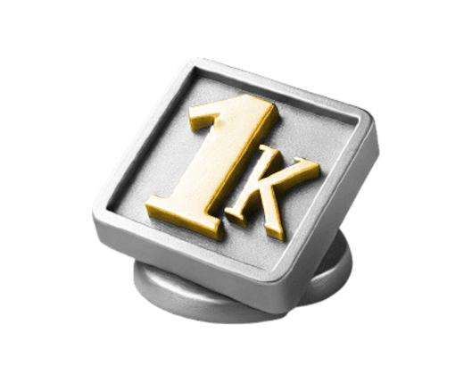
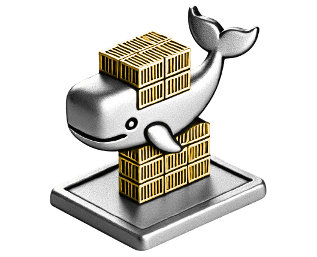

End of last year, I finished this with saying "I feel super happy to know we have an absolute concrete foundation to build our future on" that in 2024 it "will really be around further building on that rock solid baseline we've developed"
Thankfully, this again was a monumental year where we really did deliver on those ambitions - lets take a quick look back!

Cult Favorites To Icons
At the moment you can't attend a steerco or meeting without hearing the word data products; there's not a team around where we're not apart of their day to day operations and managed to secure our place as an integral part of the companies long term strategy.
This was the year we smashed that sort after 1000 regular user mark. The approach of management via communities & the datamesh is understood and has proven to be a viable alternative. We can say in all certainty this was the year we became trendsetters & started playing those stadium tours - we were no longer that fringe band your weird cousin listens to - ASDY & our products became absolute icons known by everyone in the Satair world!
#whataboutthefans #theyusedtobecool #1kbaby
Data Products
Absolutely mind boggling to think at the start of the year we still had 200+ DRSs running and only a handful of data products even in the pipe.
We managed to introduce Datadéx, integrate automated pipelines and as of today over 150 data products and counting! If last year was all about setting the foundations and the framework for them, than this year was all about delivering on them.
With the retirement of the DRSs and the vast majority of the baseline now covered with DPs, I think we can thankfully say there's a clean, solid foundation to drive the transformation from!
#deathtodrs #toomanyhealthchecks #foundationsfitforaking

Infrastructure & Growth
BW and some of the infrastructure issues we had (starting in June and escalating until the catastrophic event was sleepless September) really were some of the more defining moments of 2024 for ASDY. Normally this is something you'd try to forget (and certainly not celebrate!) but for me one of the moments that I think summed up best what ASDY is all about.
Here the team banded together, contained what they could and worked around the clock to find the actual root cause & finally implementing a proper fix to this long term issue (even using our friends in Airbus in the end to give us a much needed hint!) This here was a realization on genuinely how critical we had become - every team had some reliance on us - we were no longer a hobby - but 100% core to the running of the business.
These lessons forced us to adapt our whole approach to monitoring and better understanding our customers experiences & perceptions. At the peak of the issue, we could have blamed others - pointed at issues outside of our camp - kept our head down and weathered the storm - instead we stood tall. Simply by openly communicating & owning the problem in front of our customers, we came out the other side looking like professionals & a stronger team for it.
#sleeplessinseptember #hardenedsteel #achilliesheel #ardhurt

DevOps & K8
Our claim to fame last year was that we finally managed to stop home brewing deployments (like some kind of animals!) & instead use HELM like a civilized dev team. It was shoe stringed together via a couple of team members with no real resilience (and god forbid if anyone wanted to take a vacation!)
This year was a step change on that front - we massively ramped up the number of people and expertise we have surrounding this topic - deployed additional applications and in general just started getting more professional in the way these kinds of setups should be run.
Unfortunately though Airflow had gathered some bad habits during those early years and looked (metaphorically at least) like that first 3 bedroom house I shared with 5 guys that had dishes piled to the roof! It was fun, there were no rules, everyone was cool - but you grow out of it really quick.
Here (like the early days of the DPs) we needed to go back to basics, develop standards, processes and best practices around how we do our CI/CD deployments. Teams been absolutely awesome, working together and integrated a really sound process ready for the future. Honestly if the DP process definition last year was our springboard for data, than this is 100% the foundations for next years journey into automation!
#vacationshadandwesurvived #awsoroc4 #deathbylinter

The Future
In all the years Ive done this, its the first time I can say (with some level of certainty) where we're headed. For the sake of ASDY, we have the ambition of Saturn and will be focused around finding a path towards that "responsible independence" we so desperately need.
From a business perspective, the data foundations are now largely in place which hopefully means we can spend more time working on exploratory and value adding / step change use cases. From an ASD perspective we will play a much larger role in the architecture of the complete company - no excuses here, everything will be in our hands to push the company forward into the direction necessary to deliver on our crazily ambitious objectives for 2030.
This year was all about continual improvement, stabilizing as an organization and delivering on what we planned. Next year will be the start of a new journey - it will be about enabling the first steps towards a modern digital company. We have the data in our hands, cloud infrastructure and soon the architecture as well - its rare to have these moments where we know where we want to go and have most of the enablers at our disposal.
Next year will be all about setting ourselves, the foundations & infrastructure up to create the kind of organization that can deliver on Saturn. Make no mistake, this is the start of something incredibly special!
#fkearth #onceinalifetime #maybeapinchofml?

By The Numbers
62 Hours Of Lost Sleep (Due To BW)
2 New Babies (Also Causing Loss Of Sleep)
0 Platforms Retired (Down 100%)
37 Potatoes (Up 308%)
3 New Applications (Up 33%)
1126 Unique Skywise Users
1 Glimpse Of The Future (Qlik OTD Dashboard)
5 New Team Members
156 Dataproducts Created
1 Speeding Ticket In A Maserati (Up 100%)
Looking back on this year, it’s hard for me not to feel an honest sense of pride for everything you’ve all accomplished. This little page unfortunately doesn't begin to scratch the surface or do justice to what was achieved.
With that being said, we set out this year with a clear goal, to build on the strong foundations we laid and cement our role as an essential part of this company. Together, we genuinely exceeded those expectations while still keeping true to ourselves - having some fun, sticking to what we believe in & developing / learning along the way.
This was a year of growing our importance, not just in the work we do but in how we’re recognized within the organization. It wasn’t always easy (growth never is) but you’ve each brought a crazy level of commitment, resilience, personality and creativity to the table - it’s you guys that genuinely made all the difference.
Every single one of you has played a massive role in turning our goals into reality - we’re no longer just building; we’re shaping the future of this company - that’s something truly special.
As we close out this year, please take a moment (preferably with a quiet whisky) to reflect & celebrate on what we’ve achieved. Look back and acknowledge how far we’ve come as a team & how far we've already changed the landscape of the company.
Thank you all so much for your incredible work, passion, and belief in what we’re building here. I can’t wait to see what we accomplish together next.